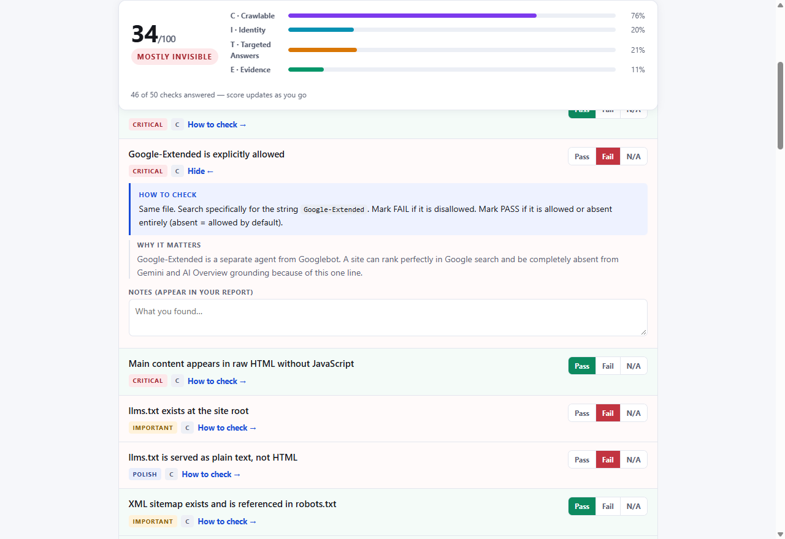
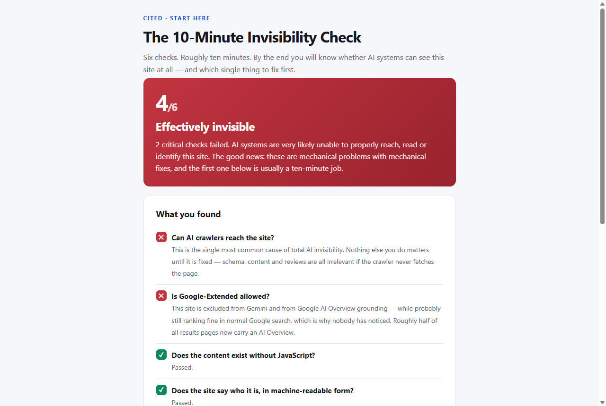
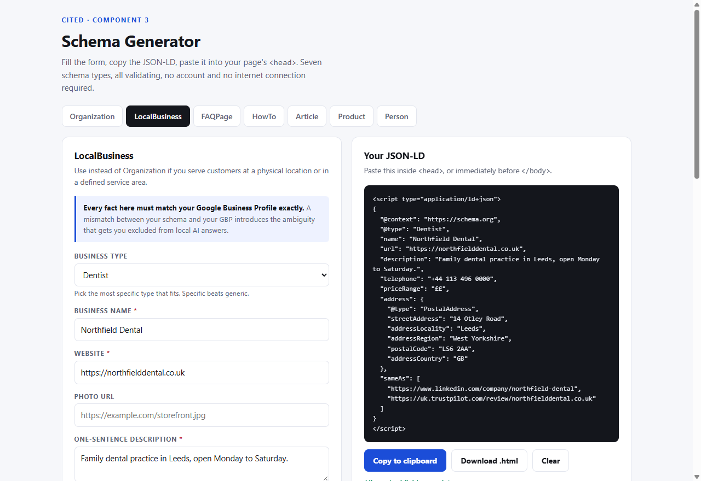
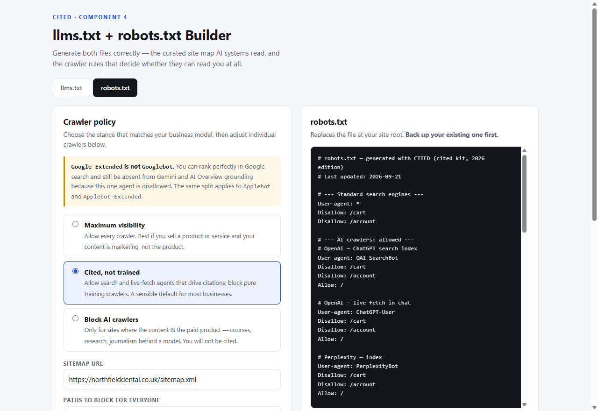
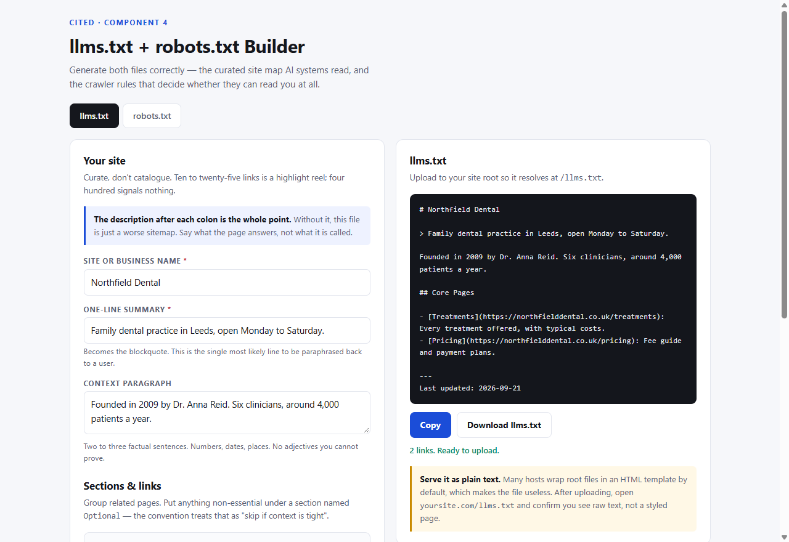
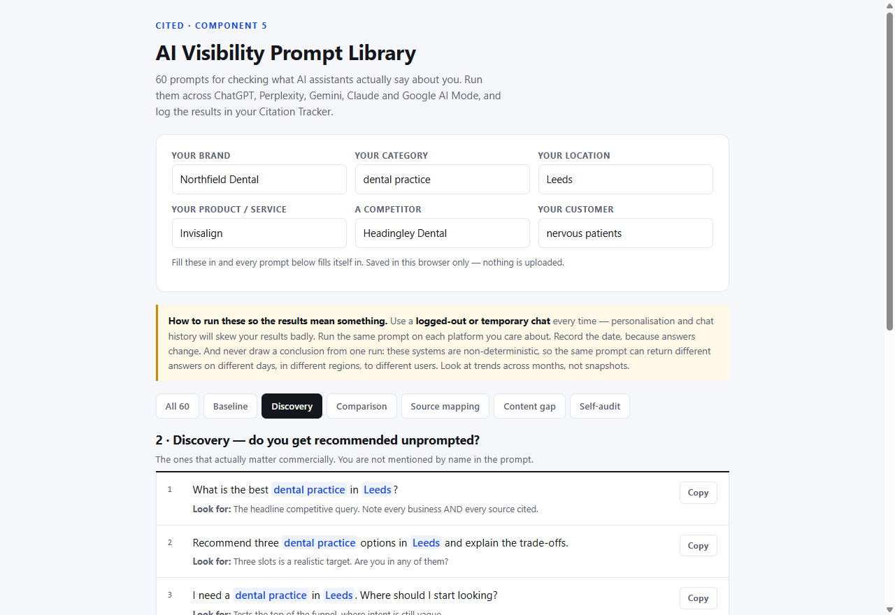

Run a complete AI visibility audit on any site — tonight.
50 checks, each with the exact steps to verify it, plus three tools that generate the robots.txt, llms.txt and schema the site actually needs. Built for the moment a client asks "why aren't we showing up in ChatGPT?" and you need a real answer — and something to sell them.

The Scorecard. Every check tells you how to verify it — so it works on a client site you have never seen before.
"We're not showing up in ChatGPT. Can you look into it?"
You know SEO. You do not yet have a repeatable process for this — a defined set of checks, in a defined order, that produces a document you can charge for.
So the honest options today are: spend a weekend assembling one from free checklists that all list the same forty things in no particular order, pay $95–$495 a month for a tool that tells you the client is invisible without telling you what to change, or say you'll look into it and hope they forget.
This is that process, built.
Sources: SparkToro, Omnibound, outreachbloom — all 2026, all linked in the kit's SOURCES.md. Every statistic on this page is sourced, because a product about being citable should probably cite things.
Published rate for one AI visibility audit: $800–$7,500.
That is the market rate for the deliverable this kit produces — not a projection, a published 2026 figure. Retainers run $2,000–$20,000/month, and experienced freelancers bill $125–$250/hour for it.
CITED is $47, once. At $47, the kit costs roughly twenty minutes of your billable time and you can use it on every client site you touch, forever.
Sources: fuelonline, stackmatix, outreachbloom, humanswith.ai — 2026 pricing surveys, linked in the kit. These are rates commanded by people with demonstrated results and existing client relationships. They are not a promise of what you will earn, and your first audits should be priced to get done, not to maximise revenue. The included First Client Pack is explicit about that.
Input → output. No results screenshots, because we don't have customers yet.
What follows are real screenshots of the actual tools doing the actual thing. You can judge the product on the product.
1 · Ten minutes to your first finding
Six guided checks with exact instructions — open this file, follow it, and you have a diagnosis. Most sites fail at least one.

2 · It writes the schema
Seven JSON-LD types. Fill the form on the left, copy validating markup from the right, paste into <head>.

3 · It writes the crawler rules
Fifteen AI crawler names handled for you, with three policy presets — and a warning if you are about to block the one that feeds Google's AI Overviews.

4 · It writes the llms.txt
The curated site map AI systems read — with a warning if your host is about to serve it as HTML, which silently makes it useless.

5 · It tells you what assistants actually say
60 prompts that fill in the brand, category and location automatically. Run them, log them, and you have a dated baseline to show a client.

"@type": "Dentist", "name": "Northfield Dental", "sameAs": [ "linkedin.com/company/…", "trustpilot.com/review/…" ]
That is the whole difference. A checklist tells you "add Organization schema". This hands you the Organization schema.
Four layers, worked in order.
The ordering is the part that makes an audit defensible. Each layer depends on the one above it — which is why a 250-item flat checklist produces paralysis instead of a plan.
The Scorecard sorts every failing item into this sequence automatically. That ordered list is your client deliverable — and it is the reason a client pays for an audit rather than downloading a free checklist themselves.
What each option actually does
Only objectively checkable distinctions below. The tools are genuinely good at what they do — they just do a different job.
| Free checklists | CITED | Tracking tools | Agency audit | |
|---|---|---|---|---|
| Lists what to check | Yes | Yes | No | Yes |
| Tells you how to verify each item | Rarely | Yes, all 50 | n/a | Yes |
| Orders fixes by dependency | No | Yes | No | Yes |
| Generates the files and markup | No | Yes | No | Yes |
| Monitors citations automatically | No | No — manual prompts | Yes | Yes |
| Client-ready report output | No | Yes | Yes | Yes |
| Reusable across unlimited sites | Yes | Yes | Per-seat/domain | Per engagement |
| Cost | $0 | $47 once | $29–$495/mo | $800–$7,500 |
Read that fifth row. CITED does not monitor anything automatically — it gives you 60 prompts to run by hand. If you need continuous automated tracking across many domains, buy a tracking tool; they are better at it. CITED is for diagnosing and fixing. Competitor pricing is publicly listed as at September 2026 and sourced in the kit.
Who this is for — and who it isn't
Buy it if…
- You do SEO, web or marketing work for clients
- Someone has already asked you about AI search and you improvised the answer
- You want a fixed-scope service you can quote on a call
- You already have retainer clients you could add this to
- You own a site yourself and are comfortable pasting code into
<head>
Skip it if…
- You want it done for you — hire an agency instead
- You want automated multi-domain monitoring — buy a tracking tool
- You want a guaranteed ChatGPT ranking — nobody can sell you that
- You run a pure e-commerce store: only 3.2% of shopping queries carry an AI Overview today, so your urgency is genuinely lower
- You won't do the work. It is a weekend, then 30 minutes a week.
The e-commerce line costs us sales. We would rather say it than take money for something you do not need yet.
Everything in the kit
No subscription. No account. No login. No API keys. Every tool runs offline in your browser and will still work in ten years, because it is just HTML.
Add at checkout: The First Client Pack +$17
How to land the first paid audit: the two prospect sweeps that find visibly broken sites in thirty minutes, the cold email that works, the fifteen-minute demo call script, eight objection responses, and what to charge for your first two. Twenty minutes to read.
Optional upgrade: The Agency Suite $97
For delivering at scale: white-label audit report you brand as your own, proposal and scope-of-work templates, a five-day delivery SOP, portfolio tracking, twelve repeatable SOPs, the competitor gap method and six more schema types.
The 30-day "implemented or refunded" guarantee
Run the audit on a real site and work the first 30 days of the plan. If that site is not measurably more machine-readable than when you started — schema validating, llms.txt live, crawlers unblocked, answer blocks in place — email us and we will refund you in full.
Note what is being guaranteed. We guarantee the implementation, because that is what the product controls. We do not guarantee that ChatGPT will cite anyone, because nobody controls that — not us, not the $495/month tools, not the $7,500 agencies. Anyone promising you a guaranteed AI citation is selling something they cannot deliver.
We checked 49 marketing and SEO companies. 83.7% had made no decision at all.
Everyone repeats that businesses are accidentally blocking AI crawlers. We went and measured it rather than assuming — and the result was not what we expected.
The story isn't obstruction — it's inattention. Almost nobody in the industry that sells search visibility has taken a position on AI crawlers. Two exceptions stood out: Trustpilot blocks every crawler site-wide, and Majestic carries a blanket Disallow: /. The Trustpilot one matters, because businesses rely on exactly that kind of third-party review page for the independent corroboration AI systems look for.
The full report, the method, the raw 49-row dataset and an honest limitations section ship inside the kit. Including the limitation that undercuts our own sales pitch: if you go checking client sites expecting to find blocked crawlers, you mostly won't. You'll find silence — which is a broader conversation, not a smaller one.
Method in brief: 62 domains attempted, 49 retrieved (79%), all on 21 September 2026. Convenience sample of marketing, SEO, hosting, website-platform, review and directory companies — not a random sample, and not small local businesses. Several major publishers refused our fetcher, which biases the sample toward permissive sites, so 4.1% should be read as a floor. Every row is independently verifiable by visiting the site's own robots.txt.
There are no testimonials on this page.
CITED launched recently and has no customer results worth showing yet. Rather than invent some — which is illegal under FTC rules and equivalent law in the UK, EU, Canada and Australia, and which you would eventually spot — here is what we offer instead:
- Real screenshots of the working tools, above. Not mockups. Judge the artefact.
- Original research with its raw dataset and limitations, including the finding that weakens our own pitch.
- Every statistic sourced and dated, in a file that ships with the product.
- An explicit list of what this does not do — no automated monitoring, no guaranteed citations, wrong fit for pure e-commerce.
- A 30-day refund on an outcome we actually control.
When real results exist, they will appear here with the customer's name and permission, and you will be able to tell the difference.
The questions you are actually asking
Can't I find all this for free?
robots.txt, llms.txt and JSON-LD. Free checklists stop at "add Organization schema". This hands you the schema. If you would rather assemble it yourself, that is genuinely a reasonable choice; it is a weekend of work.Why not just use ChatGPT to build this?
I already pay for Ahrefs / Semrush / an AI visibility tool. Do I need this?
Will this guarantee my client shows up in ChatGPT?
Is this just SEO with a new name?
Google-Extended is a separate crawler from Googlebot, which is why sites rank fine and are still absent from AI Overviews.Do I need to be technical?
<head>. One item may need a developer: fixing JavaScript-only rendering. Everything else is form-filling, file uploads and writing.Is this only useful for agencies?
Will it work for my client's platform?
robots.txt, JSON-LD, HTML semantics) that behave identically everywhere. You need a way to add code to <head> and upload a file to the site root. Every major platform supports both.How long before the client sees results?
Manage this expectation explicitly at the start of every engagement. "Best [category] in [city]" is a twelve-month project; "[category] in [city] that does [specific thing]" is a six-week one — and it converts better anyway.
Can I charge clients for work I do with this?
Is this another AI gimmick?
Why should I trust a product with no reviews?
How many client sites can I use it on?
What happens when the standards change?
llms.txt is still a proposed convention with uneven support. That is why it is dated "2026 Edition" rather than pretending to be permanent, why every statistic carries its source and date, and why the Agency Suite includes quarterly re-audit SOPs specifically for catching drift. This is a field that requires maintenance, and the product says so.Is this a subscription?
Open a logged-out chat. Ask it who the best [category] in your client's city is.
Then open their robots.txt and search for Google-Extended.
That is two of the six checks, free, in about ninety seconds. If both come back clean, you do not need this. If they don't, you have a client conversation — and the kit is $47.
Get CITED — $47 one time